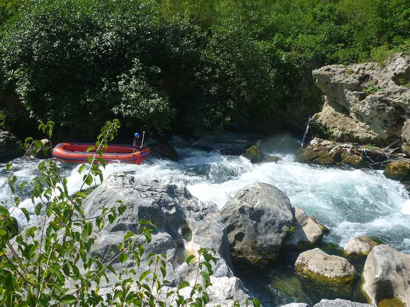
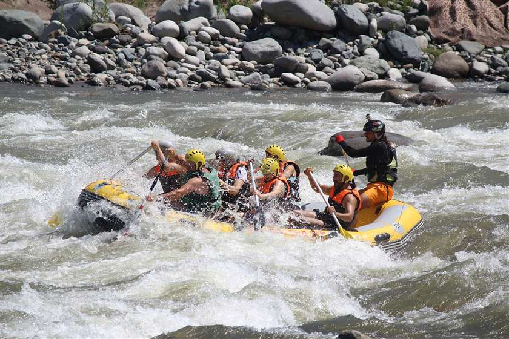

Prepare-se para remar, rir e conhecer o rio de um jeito diferente. Nossos passeios guiados são feitos para quem quer viver a emoção das corredeiras com segurança e em boa companhia.


Prepare-se para remar, rir e conhecer o rio de um jeito diferente. Nossos passeios guiados são feitos para quem quer viver a emoção das corredeiras com segurança e em boa companhia.
A Aventura nas Águas começou em 2015, quando um grupo de amigos decidiu compartilhar com mais pessoas a alegria de explorar os rios.
Com o tempo, os passeios cresceram e nossa equipe passou a receber famílias, iniciantes e amantes de aventura.